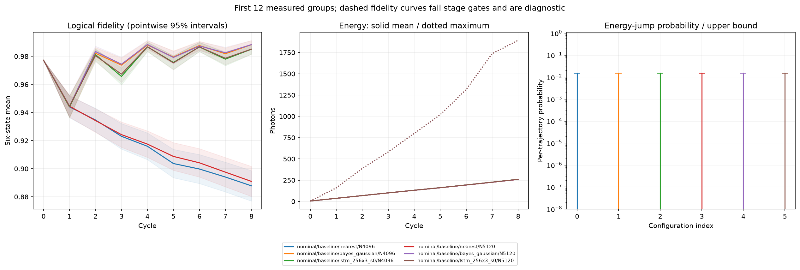
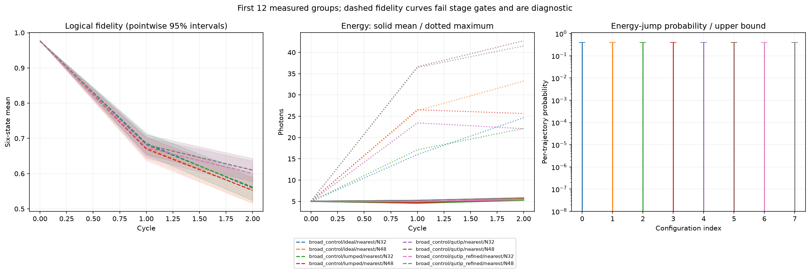
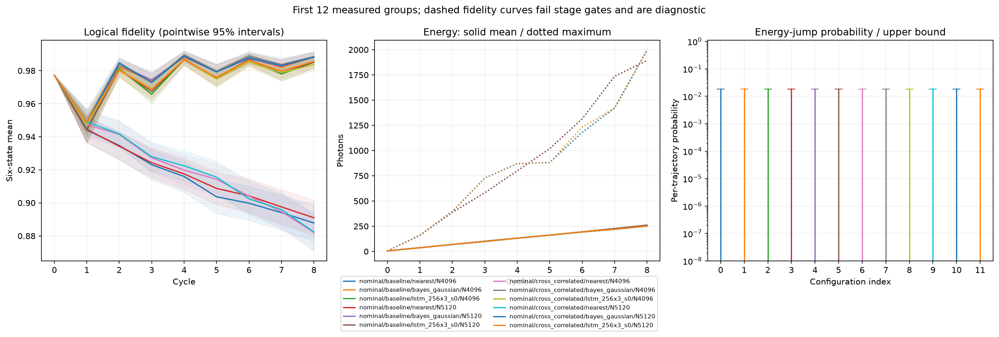

Status: running_production_sweeps. Updated 2026-11-20T19:37:20.039069+00:00.
Production numerical/physics/noise grids use 8 cycles plus initialization, 3,072 trajectories per decoder/cutoff, and three controllers. Finite-gate controls have their separately declared budget. Invalid numerical gates remain visible.
| Stage | Status | Jobs completed | Metrics |
|---|---|---|---|
| numerical | completed | 2/2 | Report |
| finite_gate | completed | 8/8 | Report |
| physics | refining_saved_scores | 13/20 | Report |
| noise | refining_saved_scores | 13/14 | Report |
| coverage | queued | 0/250 | Report |
| rare | queued | 0/300 | Report |




Live status JSON · Remote environment
Raw arrays are retained remotely. Completion, numerical validity and independent instrument coverage are reported separately. This page refreshes every30seconds.